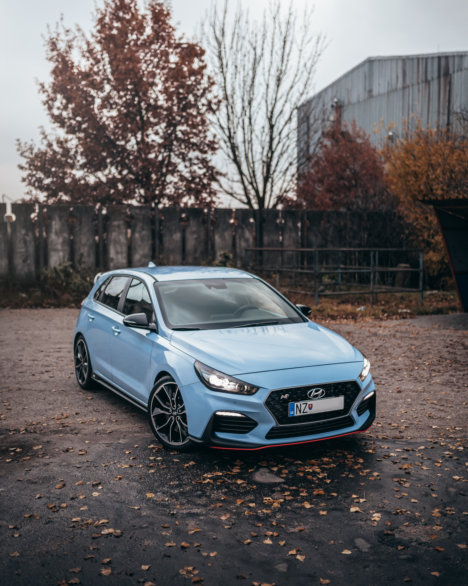

자동차 업체들은 미래차 시장을 향한 홍보전에 집중한다. 벤츠는 대형 전기차인 ‘EQS’에 탑재될 인포테인먼트 시스템인 ‘MBUX 하이퍼스크린’을 선보인다. 차량 내부 대시보드 전면에 걸쳐 장착되는 곡면의 스크린으로 넓은 화면 외에도 인공지능 기술을 탑재한 운전자 맞춤형 서비스가 특징이다.
BMW도 20년 만에 완전히 탈바꿈할 인포테인먼트 시스템 ‘아이 드라이브’와 올해 출시될 전기차 ‘iX’ 등을 공개한다. 아이 드라이브는 지능형 디지털 서비스로 진화해 차량에 탑재된 센서가 주변 환경을 인식하고 분석해 운전자에게 다양한 정보를 제공한다. 아우디는 고성능 전기차인 ‘e-트론 GT’를 중심으로 미래 모빌리티 전략을 소개할 계획이다.

'북미 올해의 차' 선정 조직위원회는 1994년 설립됐으며 27년째 매년 최고의 차를 선정하고 있다. 승용차와 트럭 2개 부문에서 최고의 차를 선정해오다 2017년부턴 SUV 차량이 자동차 업계 트렌드로 자리잡으면서 유틸리티 부문을 추가했다. 올해의 차를 선정하는 심사위원은 미국과 캐나다의 자동차 분야 전문지, 텔레비전, 라디오, 신문 등에 종사하는 50명의 전문가들로 구성됐다.